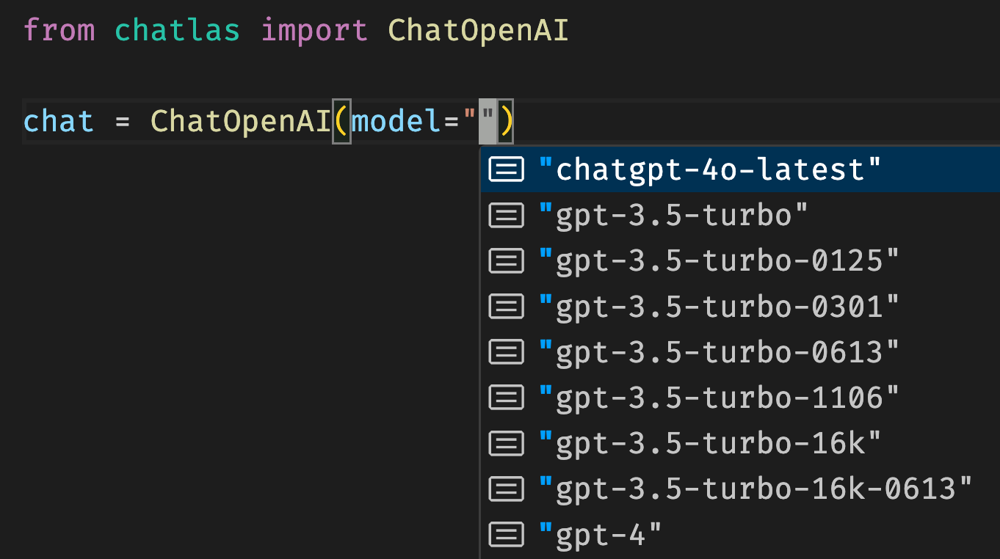

sequenceDiagram
participant U as You
participant L as LLM
participant T as Your Tool
U->>L: "What's the weather in San Francisco?"
L->>T: get_weather(city="San Francisco")
T-->>L: {"temp": 18, "condition": "cloudy"}
L->>U: "It's 18°C and cloudy in San Francisco."
chatlas
Programming with LLMs made easy
chatlas: programming with LLMs made easy

- One interface to many LLMs
- Streaming output
- Tool calling, MCP, etc
- Structured data extraction
- Async/non-blocking
- Evals, OTel, etc
- And more…
Many providers, one interface
Many providers, one interface
Model hints

See what model slugs are available for each provider.
💡 Expressed as a single string: ChatAuto("openai/gpt-5.5").
Streaming “just works”
Multi-turn: the chat remembers
Working with chat state
Chat objects are stateful — they accumulate conversation history.
Multi-modal input
Submit input other than text, such as images, pdfs, and more.
The Python logo features two intertwined snakes in yellow and blue, representing the Python programming language. The design symbolizes…
System prompt
Behind-the-scenes information that shapes every response — invisible to the user.
What is the deal with passwords? You need a capital letter, a number, a symbol… at this point I need a degree just to log into my email.
System prompt tips
- Set the scene (e.g., “You are a dashboard chat assistant”).
- Define (un)desirable behavior (e.g., “Be concise”).
- Give examples
- Give missing context (e.g., “Today’s date: 2026-07-13”).
- Provide relevant information that the model might need to generate accurate responses.
Chat methods
Three methods for interactive use:
.chat()— “echo” output, returns final response.console()— open dedicated Python console.app()— open dedicated web app
Two methods for programmatic use:
.stream()— returns a generator, you control output.stream_async()— async version of.stream()
Exercise
- Use
.chat()to submit some text and see the response. - Add a custom system prompt to change the model’s behavior.
- Try using
.app()– how is this similar/different from ChatGPT, etc?
Tool calling: the big idea
LLMs can’t do things — but they can ask you to do things.
The model decides what to call. Your code executes it.
Tools are just functions
Note that:
- Type hints are required — the model uses these to know what arguments to pass.
- Docstring is required — this is how the model understands what the tool does.
Tools in action
What just happened?
chatlas ran the “tool loop” for you:
- Sent the prompt & the tool schema to the model
- Model responded: “call
get_current_weather(37.7749, -122.4194)” - Invoked that function with those arguments
- Sent the result back to the model
- Model responded with a natural language answer
Steps 2–4 can repeat — the model can call multiple tools in sequence.
Agents: LLM + tools + loop
- Tools are a means by which LLMs both learn and alter the state of the world.
- This particular “agent” is safe, but not very capable.
- What if the model could write and execute code?
- Key idea: define a tool that takes code as input and executes it.
A tool for executing code
LLMs are very good at translating natural language into code. So, we can define a tool that takes code as input and executes it.
Are you terrified? You should be! This is a illustrative example — never execute arbitrary code in production without proper sandboxing and security measures.
Guardrails for code execution
Use a sandbox to isolate the execution environment.
- Warning: here be dragons — this is a hard problem.
Restrict the scope of what can be executed (e.g., SQL with read-only permissions).
Leverage remote tools to shift execution to a separate process or service.
Remote tools
- Tools don’t have to be available in the same process as the LLM client.
- They can be:
- Provider tools: connect through a particular provider’s API.
- MCP tools: connect through a web service or local process.
- Remote tools can be implemented in any language, not just Python.
Provider tools
chatlas comes with some “built-in” tools that use the provider’s native capabilities.
These currently include:
tool_web_search()— search the web for current informationtool_web_fetch()— read a specific URL
MCP tools
- Some are available through a hosted web service (e.g., DeepWiki).
- Others might require you to run a local process (e.g., uvx).
Exercise
- Register a tool, any tool, and call it from chat.
- Trigger a tool call from
.app(), what do you see in the UI?
Quick tour: more capabilities
Structured output
🛠️ Hands-on: build with chatlas
~15 minutes — pick your adventure:
🧪 Option A: Extend an example
Start from the exercise file and:
- Add a system prompt that sets a persona
- Add a second tool (e.g., a unit converter, a dice roller, etc.)
- Bonus: add
tool_web_search()
🤖 Option B: Vibe-code it
Open your favorite chatbot and prompt:
“Create a chatlas Python app that [your idea here]”
See how far you get — then read and fix what it generates.
Exercise file: exercises/01-chatlas-starter.py